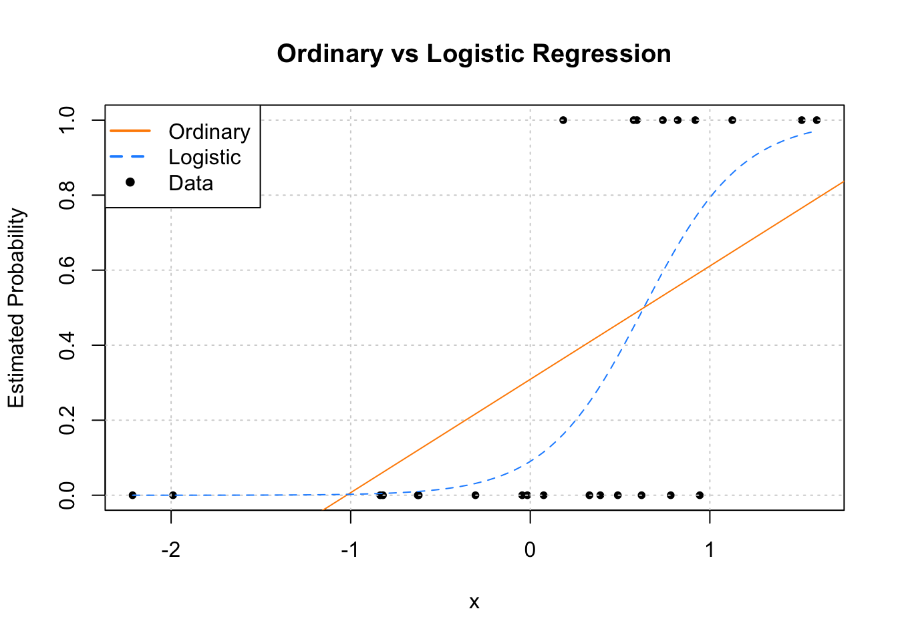
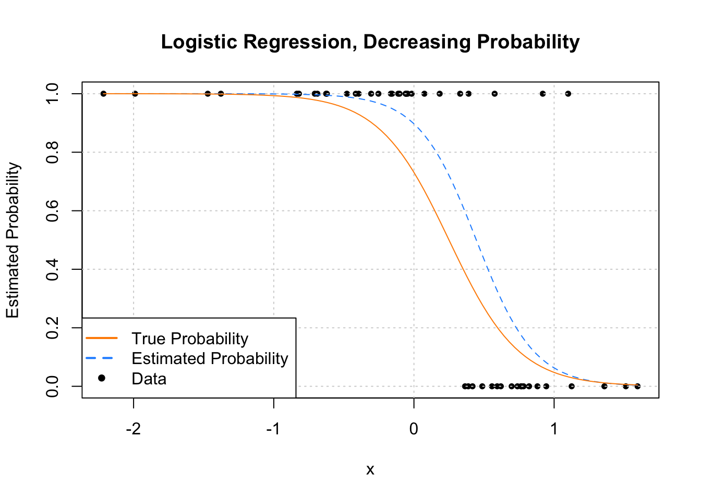
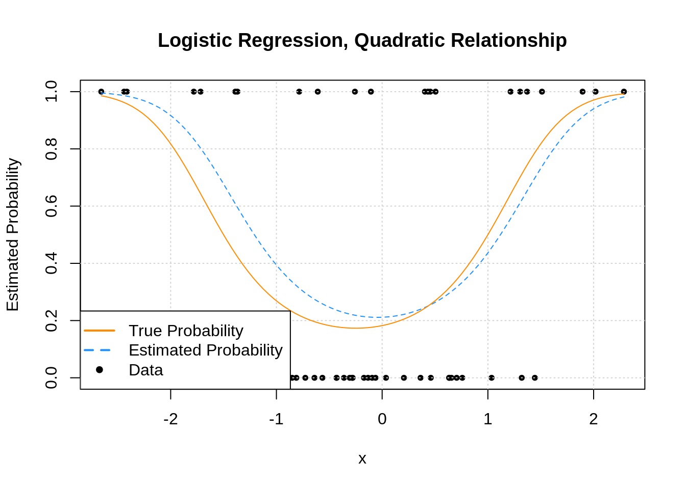
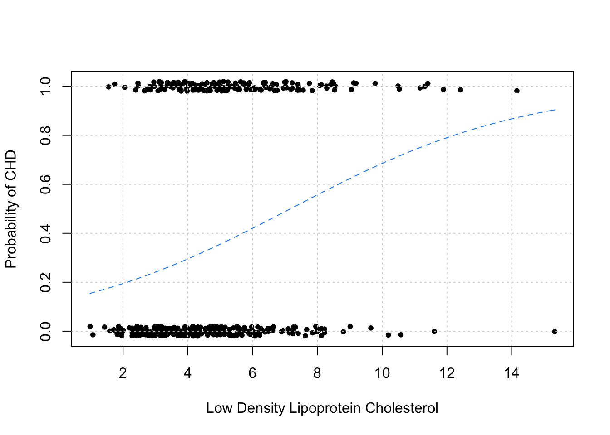

Chapter 17 Logistic Regression
Note to current readers: This chapter is slightly less tested than previous chapters. Please do not hesitate to report any errors, or suggest sections that need better explanation! Also, as a result, this material is more likely to receive edits.
After reading this chapter you will be able to:
- Understand how generalized linear models are a generalization of ordinary linear models.
- Use logistic regression to model a binary response.
- Apply concepts learned for ordinary linear models to logistic regression.
- Use logistic regression to perform classification.
So far we have only considered models for numeric response variables. What about response variables that only take integer values? What about a response variable that is categorical? Can we use linear models in these situations? Yes! The model that we have been using, which we will call ordinary linear regression, is actually a specific case of the more general, generalized linear model. (Aren’t statisticians great at naming things?)
17.1 Generalized Linear Models
So far, we’ve had response variables that, conditioned on the predictors, were modeled using a normal distribution with a mean that is some linear combination of the predictors. This linear combination is what made a linear model “linear.”
\[ Y \mid {\bf X} = {\bf x} \sim N(\beta_0 + \beta_1x_1 + \ldots + \beta_{p - 1}x_{p - 1}, \ \sigma^2) \]
Now we’ll allow for two modifications of this situation, which will let us use linear models in many more situations. Instead of using a normal distribution for the response conditioned on the predictors, we’ll allow for other distributions. Also, instead of the conditional mean being a linear combination of the predictors, it can be some function of a linear combination of the predictors.
In general, a generalized linear model has three parts:
- A distribution of the response conditioned on the predictors. (Technically this distribution needs to be from the exponential family of distributions.)
- A linear combination of the \(p - 1\) predictors, \(\beta_0 + \beta_1 x_1 + \beta_2 x_2 + \ldots + \beta_{p - 1} x_{p - 1}\), which we write as \(\eta({\bf x})\). That is,
\[\eta({\bf x}) = \beta_0 + \beta_1 x_1 + \beta_2 x_2 + \ldots + \beta_{p - 1} x_{p - 1}\]
- A link function, \(g()\), that defines how \(\eta({\bf x})\), the linear combination of the predictors, is related to the mean of the response conditioned on the predictors, \(\text{E}[Y \mid {\bf X} = {\bf x}]\).
\[ \eta({\bf x}) = g\left(\text{E}[Y \mid {\bf X} = {\bf x}]\right). \]
The following table summarizes three examples of a generalized linear model:
| Linear Regression | Poisson Regression | Logistic Regression | |
|---|---|---|---|
| \(Y \mid {\bf X} = {\bf x}\) | \(N(\mu({\bf x}), \sigma^2)\) | \(\text{Pois}(\lambda({\bf x}))\) | \(\text{Bern}(p({\bf x}))\) |
| Distribution Name | Normal | Poisson | Bernoulli (Binomial) |
| \(\text{E}[Y \mid {\bf X} = {\bf x}]\) | \(\mu({\bf x})\) | \(\lambda({\bf x})\) | \(p({\bf x})\) |
| Support | Real: \((-\infty, \infty)\) | Integer: \(0, 1, 2, \ldots\) | Integer: \(0, 1\) |
| Usage | Numeric Data | Count (Integer) Data | Binary (Class ) Data |
| Link Name | Identity | Log | Logit |
| Link Function | \(\eta({\bf x}) = \mu({\bf x})\) | \(\eta({\bf x}) = \log(\lambda({\bf x}))\) | \(\eta({\bf x}) = \log \left(\frac{p({\bf x})}{1 - p({\bf x})} \right)\) |
| Mean Function | \(\mu({\bf x}) = \eta({\bf x})\) | \(\lambda({\bf x}) = e^{\eta({\bf x})}\) | \(p({\bf x}) = \frac{e^{\eta({\bf x})}}{1 + e^{\eta({\bf x})}} = \frac{1}{1 + e^{-\eta({\bf x})}}\) |
Like ordinary linear regression, we will seek to “fit” the model by estimating the \(\beta\) parameters. To do so, we will use the method of maximum likelihood.
Note that a Bernoulli distribution is a specific case of a binomial distribution where the \(n\) parameter of a binomial is \(1\). Binomial regression is also possible, but we’ll focus on the much more popular Bernoulli case.
So, in general, GLMs relate the mean of the response to a linear combination of the predictors, \(\eta({\bf x})\), through the use of a link function, \(g()\). That is,
\[ \eta({\bf x}) = g\left(\text{E}[Y \mid {\bf X} = {\bf x}]\right). \]
The mean is then
\[ \text{E}[Y \mid {\bf X} = {\bf x}] = g^{-1}(\eta({\bf x})). \]
17.2 Binary Response
To illustrate the use of a GLM we’ll focus on the case of binary responses variable coded using \(0\) and \(1\). In practice, these \(0\) and \(1\)s will code for two classes such as yes/no, cat/dog, sick/healthy, etc.
\[ Y = \begin{cases} 1 & \text{yes} \\ 0 & \text{no} \end{cases} \]
First, we define some notation that we will use throughout.
\[ p({\bf x}) = P[Y = 1 \mid {\bf X} = {\bf x}] \]
With a binary (Bernoulli) response, we’ll mostly focus on the case when \(Y = 1\), since with only two possibilities, it is trivial to obtain probabilities when \(Y = 0\).
\[ P[Y = 0 \mid {\bf X} = {\bf x}] + P[Y = 1 \mid {\bf X} = {\bf x}] = 1 \]
\[ P[Y = 0 \mid {\bf X} = {\bf x}] = 1 - p({\bf x}) \]
We now define the logistic regression model.
\[ \log\left(\frac{p({\bf x})}{1 - p({\bf x})}\right) = \beta_0 + \beta_1 x_1 + \ldots + \beta_{p - 1} x_{p - 1} \]
Immediately we notice some similarities to ordinary linear regression, in particular, the right hand side. This is our usual linear combination of the predictors. We have our usual \(p - 1\) predictors for a total of \(p\) \(\beta\) parameters. (Note, many more machine learning focused texts will use \(p\) as the number of parameters. This is an arbitrary choice, but you should be aware of it.)
The right hand side is called the log odds, which is the log of the odds. The odds are the probability for a positive event \((Y = 1)\) divided by the probability of a negative event \((Y = 0)\). So when the odds are \(1\), the two events have equal probability. Odds greater than \(1\) favor a positive event. The opposite is true when the odds are less than \(1\).
\[ \frac{p({\bf x})}{1 - p({\bf x})} = \frac{P[Y = 1 \mid {\bf X} = {\bf x}]}{P[Y = 0 \mid {\bf X} = {\bf x}]} \]
Essentially, the log odds are the logit transform applied to \(p({\bf x})\).
\[ \text{logit}(\xi) = \log\left(\frac{\xi}{1 - \xi}\right) \]
It will also be useful to define the inverse logit, otherwise known as the “logistic” or sigmoid function.
\[ \text{logit}^{-1}(\xi) = \frac{e^\xi}{1 + e^{\xi}} = \frac{1}{1 + e^{-\xi}} \]
Note that for \(x \in (-\infty, \infty))\), this function outputs values between 0 and 1.
Students often ask, where is the error term? The answer is that its something that is specific to the normal model. First notice that the model with the error term,
\[ Y = \beta_0 + \beta_1x_1 + \ldots + \beta_qx_q + \epsilon, \ \ \epsilon \sim N(0, \sigma^2) \] can instead be written as
\[ Y \mid {\bf X} = {\bf x} \sim N(\beta_0 + \beta_1x_1 + \ldots + \beta_qx_q, \ \sigma^2). \]
While our main focus is on estimating the mean, \(\beta_0 + \beta_1x_1 + \ldots + \beta_qx_q\), there is also another parameter, \(\sigma^2\) which needs to be estimated. This is the result of the normal distribution having two parameters.
With logistic regression, which uses the Bernoulli distribution, we only need to estimate the Bernoulli distribution’s single parameter \(p({\bf x})\), which happens to be its mean.
\[ \log\left(\frac{p({\bf x})}{1 - p({\bf x})}\right) = \beta_0 + \beta_1 x_1 + \ldots + \beta_{q} x_{q} \]
So even though we introduced ordinary linear regression first, in some ways, logistic regression is actually simpler.
Note that applying the inverse logit transformation allow us to obtain an expression for \(p({\bf x})\).
\[ p({\bf x}) = P[Y = 1 \mid {\bf X} = {\bf x}] = \frac{e^{\beta_0 + \beta_1 x_{1} + \cdots + \beta_{p-1} x_{(p-1)}}}{1 + e^{\beta_0 + \beta_1 x_{1} + \cdots + \beta_{p-1} x_{(p-1)}}} \]
17.2.1 Fitting Logistic Regression
With \(n\) observations, we write the model indexed with \(i\) to note that it is being applied to each observation.
\[ \log\left(\frac{p({\bf x_i})}{1 - p({\bf x_i)})}\right) = \beta_0 + \beta_1 x_{i1} + \cdots + \beta_{p-1} x_{i(p-1)} \]
We can apply the inverse logit transformation to obtain \(P[Y_i = 1 \mid {\bf X_i} = {\bf x_i}]\) for each observation. Since these are probabilities, it’s good that we used a function that returns values between \(0\) and \(1\).
\[ p({\bf x_i}) = P[Y_i = 1 \mid {\bf X_i} = {\bf x_i}] = \frac{e^{\beta_0 + \beta_1 x_{i1} + \cdots + \beta_{p-1} x_{i(p-1)}}}{1 + e^{\beta_0 + \beta_1 x_{i1} + \cdots + \beta_{p-1} x_{i(p-1)}}} \]
\[ 1 - p({\bf x_i}) = P[Y_i = 0 \mid {\bf X} = {\bf x_i}] = \frac{1}{1 + e^{\beta_0 + \beta_1 x_{i1} + \cdots + \beta_{p-1} x_{i(p-1)}}} \]
To “fit” this model, that is estimate the \(\beta\) parameters, we will use maximum likelihood.
\[ \boldsymbol{{\beta}} = [\beta_0, \beta_1, \beta_2, \beta_3, \ldots \beta_{p - 1}] \]
We first write the likelihood given the observed data.
\[ L(\boldsymbol{{\beta}}) = \prod_{i = 1}^{n} P[Y_i = y_i \mid {\bf X_i} = {\bf x_i}] \]
This is already technically a function of the \(\beta\) parameters, but we’ll do some rearrangement to make this more explicit.
\[ L(\boldsymbol{{\beta}}) = \prod_{i = 1}^{n} p({\bf x_i})^{y_i} (1 - p({\bf x_i}))^{(1 - y_i)} \]
\[ L(\boldsymbol{{\beta}}) = \prod_{i : y_i = 1}^{n} p({\bf x_i}) \prod_{j : y_j = 0}^{n} (1 - p({\bf x_j})) \]
\[ L(\boldsymbol{{\beta}}) = \prod_{i : y_i = 1}^{} \frac{e^{\beta_0 + \beta_1 x_{i1} + \cdots + \beta_{p-1} x_{i(p-1)}}}{1 + e^{\beta_0 + \beta_1 x_{i1} + \cdots + \beta_{p-1} x_{i(p-1)}}} \prod_{j : y_j = 0}^{} \frac{1}{1 + e^{\beta_0 + \beta_1 x_{j1} + \cdots + \beta_{p-1} x_{j(p-1)}}} \]
Unfortunately, unlike ordinary linear regression, there is no analytical solution for this maximization problem. Instead, it will need to be solved numerically. Fortunately, R will take care of this for us using an iteratively reweighted least squares algorithm. (We’ll leave the details for a machine learning or optimization course, which would likely also discuss alternative optimization strategies.)
17.2.2 Fitting Issues
We should note that, if there exists some \(\beta^*\) such that
\[ {\bf x_i}^{\top} \boldsymbol{{\beta}^*} > 0 \implies y_i = 1 \]
and
\[ {\bf x_i}^{\top} \boldsymbol{{\beta}^*} < 0 \implies y_i = 0 \]
for all observations, then the MLE is not unique. Such data is said to be separable.
This, and similar numeric issues related to estimated probabilities near 0 or 1, will return a warning in R:
## Warning: glm.fit: fitted probabilities numerically 0 or 1 occurredWhen this happens, the model is still “fit,” but there are consequences, namely, the estimated coefficients are highly suspect. This is an issue when then trying to interpret the model. When this happens, the model will often still be useful for creating a classifier, which will be discussed later. However, it is still subject to the usual evaluations for classifiers to determine how well it is performing. For details, see Modern Applied Statistics with S-PLUS, Chapter 7.
17.2.3 Simulation Examples
sim_logistic_data = function(sample_size = 25, beta_0 = -2, beta_1 = 3) {
x = rnorm(n = sample_size)
eta = beta_0 + beta_1 * x
p = 1 / (1 + exp(-eta))
y = rbinom(n = sample_size, size = 1, prob = p)
data.frame(y, x)
}You might think, why not simply use ordinary linear regression? Even with a binary response, our goal is still to model (some function of) \(\text{E}[Y \mid {\bf X} = {\bf x}]\). However, with a binary response coded as \(0\) and \(1\), \(\text{E}[Y \mid {\bf X} = {\bf x}] = P[Y = 1 \mid {\bf X} = {\bf x}]\) since
\[ \begin{aligned} \text{E}[Y \mid {\bf X} = {\bf x}] &= 1 \cdot P[Y = 1 \mid {\bf X} = {\bf x}] + 0 \cdot P[Y = 0 \mid {\bf X} = {\bf x}] \\ &= P[Y = 1 \mid {\bf X} = {\bf x}] \end{aligned} \]
Then why can’t we just use ordinary linear regression to estimate \(\text{E}[Y \mid {\bf X} = {\bf x}]\), and thus \(P[Y = 1 \mid {\bf X} = {\bf x}]\)?
To investigate, let’s simulate data from the following model:
\[ \log\left(\frac{p({\bf x})}{1 - p({\bf x})}\right) = -2 + 3 x \]
Another way to write this, which is better matches the function we’re using to simulate the data:
\[ \begin{aligned} Y_i \mid {\bf X_i} = {\bf x_i} &\sim \text{Bern}(p_i) \\ p_i &= p({\bf x_i}) = \frac{1}{1 + e^{-\eta({\bf x_i})}} \\ \eta({\bf x_i}) &= -2 + 3 x_i \end{aligned} \]
set.seed(1)
example_data = sim_logistic_data()
head(example_data)## y x
## 1 0 -0.6264538
## 2 1 0.1836433
## 3 0 -0.8356286
## 4 1 1.5952808
## 5 0 0.3295078
## 6 0 -0.8204684After simulating a dataset, we’ll then fit both ordinary linear regression and logistic regression. Notice that currently the responses variable y is a numeric variable that only takes values 0 and 1. Later we’ll see that we can also fit logistic regression when the response is a factor variable with only two levels. (Generally, having a factor response is preferred, but having a dummy response allows use to make the comparison to using ordinary linear regression.)
# ordinary linear regression
fit_lm = lm(y ~ x, data = example_data)
# logistic regression
fit_glm = glm(y ~ x, data = example_data, family = binomial)Notice that the syntax is extremely similar. What’s changed?
lm()has becomeglm()- We’ve added
family = binomialargument
In a lot of ways, lm() is just a more specific version of glm(). For example
glm(y ~ x, data = example_data)would actually fit the ordinary linear regression that we have seen in the past. By default, glm() uses family = gaussian argument. That is, we’re fitting a GLM with a normally distributed response and the identity function as the link.
The family argument to glm() actually specifies both the distribution and the link function. If not made explicit, the link function is chosen to be the canonical link function, which is essentially the most mathematical convenient link function. See ?glm and ?family for details. For example, the following code explicitly specifies the link function which was previously used by default.
# more detailed call to glm for logistic regression
fit_glm = glm(y ~ x, data = example_data, family = binomial(link = "logit"))Making predictions with an object of type glm is slightly different than making predictions after fitting with lm(). In the case of logistic regression, with family = binomial, we have:
type |
Returned |
|---|---|
"link" [default] |
\(\hat{\eta}({\bf x}) = \log\left(\frac{\hat{p}({\bf x})}{1 - \hat{p}({\bf x})}\right)\) |
"response" |
\(\hat{p}({\bf x}) = \frac{e^{\hat{\eta}({\bf x})}}{1 + e^{\hat{\eta}({\bf x})}} = \frac{1}{1 + e^{-\hat{\eta}({\bf x})}}\) |
That is, type = "link" will get you the log odds, while type = "response" will return the estimated mean, in this case, \(P[Y = 1 \mid {\bf X} = {\bf x}]\) for each observation.
plot(y ~ x, data = example_data,
pch = 20, ylab = "Estimated Probability",
main = "Ordinary vs Logistic Regression")
grid()
abline(fit_lm, col = "darkorange")
curve(predict(fit_glm, data.frame(x), type = "response"),
add = TRUE, col = "dodgerblue", lty = 2)
legend("topleft", c("Ordinary", "Logistic", "Data"), lty = c(1, 2, 0),
pch = c(NA, NA, 20), lwd = 2, col = c("darkorange", "dodgerblue", "black"))
Since we only have a single predictor variable, we are able to graphically show this situation. First, note that the data, is plotted using black dots. The response y only takes values 0 and 1.
Next, we need to discuss the two added lines to the plot. The first, the solid orange line, is the fitted ordinary linear regression.
The dashed blue curve is the estimated logistic regression. It is helpful to realize that we are not plotting an estimate of \(Y\) for either. (Sometimes it might seem that way with ordinary linear regression, but that isn’t what is happening.) For both, we are plotting \(\hat{\text{E}}[Y \mid {\bf X} = {\bf x}]\), the estimated mean, which for a binary response happens to be an estimate of \(P[Y = 1 \mid {\bf X} = {\bf x}]\).
We immediately see why ordinary linear regression is not a good idea. While it is estimating the mean, we see that it produces estimates that are less than 0! (And in other situations could produce estimates greater than 1!) If the mean is a probability, we don’t want probabilities less than 0 or greater than 1.
Enter logistic regression. Since the output of the inverse logit function is restricted to be between 0 and 1, our estimates make much more sense as probabilities. Let’s look at our estimated coefficients. (With a lot of rounding, for simplicity.)
round(coef(fit_glm), 1)## (Intercept) x
## -2.3 3.7Our estimated model is then:
\[ \log\left(\frac{\hat{p}({\bf x})}{1 - \hat{p}({\bf x})}\right) = -2.3 + 3.7 x \]
Because we’re not directly estimating the mean, but instead a function of the mean, we need to be careful with our interpretation of \(\hat{\beta}_1 = 3.7\). This means that, for a one unit increase in \(x\), the log odds change (in this case increase) by \(3.7\). Also, since \(\hat{\beta}_1\) is positive, as we increase \(x\) we also increase \(\hat{p}({\bf x})\). To see how much, we have to consider the inverse logistic function.
For example, we have:
\[ \hat{P}[Y = 1 \mid X = -0.5] = \frac{e^{-2.3 + 3.7 \cdot (-0.5)}}{1 + e^{-2.3 + 3.7 \cdot (-0.5)}} \approx 0.016 \]
\[ \hat{P}[Y = 1 \mid X = 0] = \frac{e^{-2.3 + 3.7 \cdot (0)}}{1 + e^{-2.3 + 3.7 \cdot (0)}} \approx 0.09112296 \]
\[ \hat{P}[Y = 1 \mid X = 1] = \frac{e^{-2.3 + 3.7 \cdot (1)}}{1 + e^{-2.3 + 3.7 \cdot (1)}} \approx 0.8021839 \]
Now that we know we should use logistic regression, and not ordinary linear regression, let’s consider another example. This time, let’s consider the model
\[ \log\left(\frac{p({\bf x})}{1 - p({\bf x})}\right) = 1 + -4 x. \]
Again, we could re-write this to better match the function we’re using to simulate the data:
\[ \begin{aligned} Y_i \mid {\bf X_i} = {\bf x_i} &\sim \text{Bern}(p_i) \\ p_i &= p({\bf x_i}) = \frac{1}{1 + e^{-\eta({\bf x_i})}} \\ \eta({\bf x_i}) &= 1 + -4 x_i \end{aligned} \]
In this model, as \(x\) increases, the log odds decrease.
set.seed(1)
example_data = sim_logistic_data(sample_size = 50, beta_0 = 1, beta_1 = -4)We again simulate some observations form this model, then fit logistic regression.
fit_glm = glm(y ~ x, data = example_data, family = binomial)plot(y ~ x, data = example_data,
pch = 20, ylab = "Estimated Probability",
main = "Logistic Regression, Decreasing Probability")
grid()
curve(predict(fit_glm, data.frame(x), type = "response"),
add = TRUE, col = "dodgerblue", lty = 2)
legend("bottomleft", c("Estimated Probability", "Data"), lty = c(2, 0),
pch = c(NA, 20), lwd = 2, col = c("dodgerblue", "black"))
We see that this time, as \(x\) increases, \(\hat{p}({\bf x})\) decreases.
Now let’s look at an example where the estimated probability doesn’t always simply increase or decrease. Much like ordinary linear regression, the linear combination of predictors can contain transformations of predictors (in this case a quadratic term) and interactions.
sim_quadratic_logistic_data = function(sample_size = 25) {
x = rnorm(n = sample_size)
eta = -1.5 + 0.5 * x + x ^ 2
p = 1 / (1 + exp(-eta))
y = rbinom(n = sample_size, size = 1, prob = p)
data.frame(y, x)
}\[ \log\left(\frac{p({\bf x})}{1 - p({\bf x})}\right) = -1.5 + 0.5x + x^2. \]
Again, we could re-write this to better match the function we’re using to simulate the data:
\[ \begin{aligned} Y_i \mid {\bf X_i} = {\bf x_i} &\sim \text{Bern}(p_i) \\ p_i &= p({\bf x_i}) = \frac{1}{1 + e^{-\eta({\bf x_i})}} \\ \eta({\bf x_i}) &= -1.5 + 0.5x_i + x_i^2 \end{aligned} \]
set.seed(42)
example_data = sim_quadratic_logistic_data(sample_size = 50)fit_glm = glm(y ~ x + I(x^2), data = example_data, family = binomial)plot(y ~ x, data = example_data,
pch = 20, ylab = "Estimated Probability",
main = "Logistic Regression, Quadratic Relationship")
grid()
curve(predict(fit_glm, data.frame(x), type = "response"),
add = TRUE, col = "dodgerblue", lty = 2)
legend("left", c("Prob", "Data"), lty = c(2, 0),
pch = c(NA, 20), lwd = 2, col = c("dodgerblue", "black"))
17.3 Working with Logistic Regression
While the logistic regression model isn’t exactly the same as the ordinary linear regression model, because they both use a linear combination of the predictors
\[ \eta({\bf x}) = \beta_0 + \beta_1 x_1 + \beta_2 x_2 + \ldots + \beta_{p - 1} x_{p - 1} \]
working with logistic regression is very similar. Many of the things we did with ordinary linear regression can be done with logistic regression in a very similar fashion. For example,
- Testing for a single \(\beta\) parameter
- Testing for a set of \(\beta\) parameters
- Formula specification in
R - Interpreting parameters and estimates
- Confidence intervals for parameters
- Confidence intervals for mean response
- Variable selection
After some introduction to the new tests, we’ll demonstrate each of these using an example.
17.3.1 Testing with GLMs
Like ordinary linear regression, we’ll want to be able to perform hypothesis testing. We’ll again want both single parameter, and multiple parameter tests.
17.3.2 Wald Test
In ordinary linear regression, we performed the test of
\[ H_0: \beta_j = 0 \quad \text{vs} \quad H_1: \beta_j \neq 0 \]
using a \(t\)-test.
For the logistic regression model,
\[ \log\left(\frac{p({\bf x})}{1 - p({\bf x})}\right) = \beta_0 + \beta_1 x_1 + \ldots + \beta_{p - 1} x_{p - 1} \]
we can again perform a test of
\[ H_0: \beta_j = 0 \quad \text{vs} \quad H_1: \beta_j \neq 0 \]
however, the test statistic and its distribution are no longer \(t\). We see that the test statistic takes the same form
\[ z = \frac{\hat{\beta}_j - \beta_j}{\text{SE}[\hat{\beta}_j]} \overset{\text{approx}}{\sim} N(0, 1) \]
but now we are performing a \(z\)-test, as the test statistic is approximated by a standard normal distribution, provided we have a large enough sample. (The \(t\)-test for ordinary linear regression, assuming the assumptions were correct, had an exact distribution for any sample size.)
We’ll skip some of the exact details of the calculations, as R will obtain the standard error for us. The use of this test will be extremely similar to the \(t\)-test for ordinary linear regression. Essentially the only thing that changes is the distribution of the test statistic.
17.3.3 Likelihood-Ratio Test
Consider the following full model,
\[ \log\left(\frac{p({\bf x_i})}{1 - p({\bf x_i})}\right) = \beta_0 + \beta_1 x_{i1} + \beta_2 x_{i2} + \cdots + \beta_{(p-1)} x_{i(p-1)} + \epsilon_i \]
This model has \(p - 1\) predictors, for a total of \(p\) \(\beta\)-parameters. We will denote the MLE of these \(\beta\)-parameters as \(\hat{\beta}_{\text{Full}}\)
Now consider a null (or reduced) model,
\[ \log\left(\frac{p({\bf x_i})}{1 - p({\bf x_i})}\right) = \beta_0 + \beta_1 x_{i1} + \beta_2 x_{i2} + \cdots + \beta_{(q-1)} x_{i(q-1)} + \epsilon_i \]
where \(q < p\). This model has \(q - 1\) predictors, for a total of \(q\) \(\beta\)-parameters. We will denote the MLE of these \(\beta\)-parameters as \(\hat{\beta}_{\text{Null}}\)
The difference between these two models can be codified by the null hypothesis of a test.
\[ H_0: \beta_q = \beta_{q+1} = \cdots = \beta_{p - 1} = 0. \]
This implies that the reduced model is nested inside the full model.
We then define a test statistic, \(D\),
\[ D = -2 \log \left( \frac{L(\boldsymbol{\hat{\beta}_{\text{Null}}})} {L(\boldsymbol{\hat{\beta}_{\text{Full}}})} \right) = 2 \log \left( \frac{L(\boldsymbol{\hat{\beta}_{\text{Full}}})} {L(\boldsymbol{\hat{\beta}_{\text{Null}}})} \right) = 2 \left( \ell(\hat{\beta}_{\text{Full}}) - \ell(\hat{\beta}_{\text{Null}})\right) \]
where \(L\) denotes a likelihood and \(\ell\) denotes a log-likelihood. For a large enough sample, this test statistic has an approximate Chi-square distribution
\[ D \overset{\text{approx}}{\sim} \chi^2_{k} \]
where \(k = p - q\), the difference in number of parameters of the two models.
This test, which we will call the Likelihood-Ratio Test, will be the analogue to the ANOVA \(F\)-test for logistic regression. Interestingly, to perform the Likelihood-Ratio Test, we’ll actually again use the anova() function in R!.
The Likelihood-Ratio Test is actually a rather general test, however, here we have presented a specific application to nested logistic regression models.
17.3.4 SAheart Example
To illustrate the use of logistic regression, we will use the SAheart dataset from the ElemStatLearn package.
# install.packages("ElemStatLearn")
library(ElemStatLearn)
data("SAheart")| sbp | tobacco | ldl | adiposity | famhist | typea | obesity | alcohol | age | chd |
|---|---|---|---|---|---|---|---|---|---|
| 160 | 12.00 | 5.73 | 23.11 | Present | 49 | 25.30 | 97.20 | 52 | 1 |
| 144 | 0.01 | 4.41 | 28.61 | Absent | 55 | 28.87 | 2.06 | 63 | 1 |
| 118 | 0.08 | 3.48 | 32.28 | Present | 52 | 29.14 | 3.81 | 46 | 0 |
| 170 | 7.50 | 6.41 | 38.03 | Present | 51 | 31.99 | 24.26 | 58 | 1 |
| 134 | 13.60 | 3.50 | 27.78 | Present | 60 | 25.99 | 57.34 | 49 | 1 |
| 132 | 6.20 | 6.47 | 36.21 | Present | 62 | 30.77 | 14.14 | 45 | 0 |
This data comes from a retrospective sample of males in a heart-disease high-risk region of the Western Cape, South Africa. The chd variable, which we will use as a response, indicates whether or not coronary heart disease is present in an individual. Note that this is coded as a numeric 0 / 1 variable. Using this as a response with glm() it is important to indicate family = binomial, otherwise ordinary linear regression will be fit. Later, we will see the use of a factor variable response, which is actually preferred, as you cannot accidentally fit ordinary linear regression.
The predictors are various measurements for each individual, many related to heart health. For example sbp, systolic blood pressure, and ldl, low density lipoprotein cholesterol. For full details, use ?SAheart.
We’ll begin by attempting to model the probability of coronary heart disease based on low density lipoprotein cholesterol. That is, we will fit the model
\[ \log\left(\frac{P[\texttt{chd} = 1]}{1 - P[\texttt{chd} = 1]}\right) = \beta_0 + \beta_{\texttt{ldl}} \texttt{ldl} \]
chd_mod_ldl = glm(chd ~ ldl, data = SAheart, family = binomial)
plot(jitter(chd, factor = 0.1) ~ ldl, data = SAheart, pch = 20,
ylab = "Probability of CHD", xlab = "Low Density Lipoprotein Cholesterol")
grid()
curve(predict(chd_mod_ldl, data.frame(ldl = x), type = "response"),
add = TRUE, col = "dodgerblue", lty = 2)
As before, we plot the data in addition to the estimated probabilities. Note that we have “jittered” the data to make it easier to visualize, but the data do only take values 0 and 1.
As we would expect, this plot indicates that as ldl increases, so does the probability of chd.
coef(summary(chd_mod_ldl))## Estimate Std. Error z value Pr(>|z|)
## (Intercept) -1.9686681 0.27307908 -7.209150 5.630207e-13
## ldl 0.2746613 0.05163983 5.318787 1.044615e-07To perform the test
\[ H_0: \beta_{\texttt{ldl}} = 0 \]
we use the summary() function as we have done so many times before. Like the \(t\)-test for ordinary linear regression, this returns the estimate of the parameter, its standard error, the relevant test statistic (\(z\)), and its p-value. Here we have an incredibly low p-value, so we reject the null hypothesis. The ldl variable appears to be a significant predictor.
When fitting logistic regression, we can use the same formula syntax as ordinary linear regression. So, to fit an additive model using all available predictors, we use:
chd_mod_additive = glm(chd ~ ., data = SAheart, family = binomial)We can then use the likelihood-ratio test to compare the two model. Specifically, we are testing
\[ H_0: \beta_{\texttt{sbp}} = \beta_{\texttt{tobacco}} = \beta_{\texttt{adiposity}} = \beta_{\texttt{famhist}} = \beta_{\texttt{typea}} = \beta_{\texttt{obesity}} = \beta_{\texttt{alcohol}} = \beta_{\texttt{age}} = 0 \]
We could manually calculate the test statistic,
-2 * as.numeric(logLik(chd_mod_ldl) - logLik(chd_mod_additive))## [1] 92.13879Or we could utilize the anova() function. By specifying test = "LRT", R will use the likelihood-ratio test to compare the two models.
anova(chd_mod_ldl, chd_mod_additive, test = "LRT")## Analysis of Deviance Table
##
## Model 1: chd ~ ldl
## Model 2: chd ~ sbp + tobacco + ldl + adiposity + famhist + typea + obesity +
## alcohol + age
## Resid. Df Resid. Dev Df Deviance Pr(>Chi)
## 1 460 564.28
## 2 452 472.14 8 92.139 < 2.2e-16 ***
## ---
## Signif. codes: 0 '***' 0.001 '**' 0.01 '*' 0.05 '.' 0.1 ' ' 1We see that the test statistic that we had just calculated appears in the output. The very small p-value suggests that we prefer the larger model.
While we prefer the additive model compared to the model with only a single predictor, do we actually need all of the predictors in the additive model? To select a subset of predictors, we can use a stepwise procedure as we did with ordinary linear regression. Recall that AIC and BIC were defined in terms of likelihoods. Here we demonstrate using AIC with a backwards selection procedure.
chd_mod_selected = step(chd_mod_additive, trace = 0)
coef(chd_mod_selected)## (Intercept) tobacco ldl famhistPresent typea
## -6.44644451 0.08037533 0.16199164 0.90817526 0.03711521
## age
## 0.05046038We could again compare this model to the additive models.
\[ H_0: \beta_{\texttt{sbp}} = \beta_{\texttt{adiposity}} = \beta_{\texttt{obesity}} = \beta_{\texttt{alcohol}} = 0 \]
anova(chd_mod_selected, chd_mod_additive, test = "LRT")## Analysis of Deviance Table
##
## Model 1: chd ~ tobacco + ldl + famhist + typea + age
## Model 2: chd ~ sbp + tobacco + ldl + adiposity + famhist + typea + obesity +
## alcohol + age
## Resid. Df Resid. Dev Df Deviance Pr(>Chi)
## 1 456 475.69
## 2 452 472.14 4 3.5455 0.471Here it seems that we would prefer the selected model.
17.3.5 Confidence Intervals
We can create confidence intervals for the \(\beta\) parameters using the confint() function as we did with ordinary linear regression.
confint(chd_mod_selected, level = 0.99)## Waiting for profiling to be done...## 0.5 % 99.5 %
## (Intercept) -8.941825274 -4.18278990
## tobacco 0.015704975 0.14986616
## ldl 0.022923610 0.30784590
## famhistPresent 0.330033483 1.49603366
## typea 0.006408724 0.06932612
## age 0.024847330 0.07764277Note that we could create intervals by rearranging the results of the Wald test to obtain the Wald confidence interval. This would be given by
\[ \hat{\beta}_j \pm z_{\alpha/2} \cdot \text{SE}[\hat{\beta}_j]. \]
However, R is using a slightly different approach based on a concept called the profile likelihood. (The details of which we will omit.) Ultimately the intervals reported will be similar, but the method used by R is more common in practice, probably at least partially because it is the default approach in R. Check to see how intervals using the formula above compare to those from the output of confint(). (Or, note that using confint.default() will return the results of calculating the Wald confidence interval.)
17.3.6 Confidence Intervals for Mean Response
Confidence intervals for the mean response require some additional thought. With a “large enough” sample, we have
\[ \frac{\hat{\eta}({\bf x}) - \eta({\bf x})}{\text{SE}[\hat{\eta}({\bf x})]} \overset{\text{approx}}{\sim} N(0, 1) \]
Then we can create an approximate \((1 - \alpha)\%\) confidence intervals for \(\eta({\bf x})\) using
\[ \hat{\eta}({\bf x}) \pm z_{\alpha/2} \cdot \text{SE}[\hat{\eta}({\bf x})]] \]
where \(z_{\alpha/2}\) is the critical value such that \(P(Z > z_{\alpha/2}) = \alpha/2\).
This isn’t a particularly interesting interval. Instead, what we really want is an interval for the mean response, \(p({\bf x})\). To obtain an interval for \(p({\bf x})\), we simply apply the inverse logit transform to the endpoints of the interval for \(\eta.\)
\[ \left(\text{logit}^{-1}(\hat{\eta}({\bf x}) - z_{\alpha/2} \cdot \text{SE}[\hat{\eta}({\bf x})] ), \ \text{logit}^{-1}(\hat{\eta}({\bf x}) + z_{\alpha/2} \cdot \text{SE}[\hat{\eta}({\bf x})])\right) \]
To demonstrate creating these intervals, we’ll consider a new observation.
new_obs = data.frame(
sbp = 148.0,
tobacco = 5,
ldl = 12,
adiposity = 31.23,
famhist = "Present",
typea = 47,
obesity = 28.50,
alcohol = 23.89,
age = 60
)Fist, we’ll use the predict() function to obtain \(\hat{\eta}({\bf x})\) for this observation.
eta_hat = predict(chd_mod_selected, new_obs, se.fit = TRUE, type = "link")
eta_hat## $fit
## 1
## 1.579545
##
## $se.fit
## [1] 0.4114796
##
## $residual.scale
## [1] 1By setting se.fit = TRUE, R also computes \(\text{SE}[\hat{\eta}({\bf x})]\). Note that we used type = "link", but this is actually a default value. We added it here to stress that the output from predict() will be the value of the link function.
z_crit = round(qnorm(0.975), 2)
round(z_crit, 2)## [1] 1.96After obtaining the correct critical value, we can easily create a \(95\%\) confidence interval for \(\eta({\bf x})\).
eta_hat$fit + c(-1, 1) * z_crit * eta_hat$se.fit## [1] 0.773045 2.386045Now we simply need to apply the correct transformation to make this a confidence interval for \(p({\bf x})\), the probability of coronary heart disease for this observation. Note that the boot package contains functions logit() and inv.logit() which are the logit and inverse logit transformations, respectively.
boot::inv.logit(eta_hat$fit + c(-1, 1) * z_crit * eta_hat$se.fit)## [1] 0.6841792 0.9157570Notice, as we would expect, the bounds of this interval are both between 0 and 1. Also, since both bounds of the interval for \(\eta({\bf x})\) are positive, both bounds of the interval for \(p({\bf x})\) are greater than 0.5.
17.3.7 Formula Syntax
Without really thinking about it, we’ve been using our previous knowledge of R’s model formula syntax to fit logistic regression.
17.3.7.1 Interactions
Let’s add an interaction between LDL and family history for the model we selected.
chd_mod_interaction = glm(chd ~ alcohol + ldl + famhist + typea + age + ldl:famhist,
data = SAheart, family = binomial)
summary(chd_mod_interaction)##
## Call:
## glm(formula = chd ~ alcohol + ldl + famhist + typea + age + ldl:famhist,
## family = binomial, data = SAheart)
##
## Deviance Residuals:
## Min 1Q Median 3Q Max
## -1.9082 -0.8308 -0.4550 0.9286 2.5152
##
## Coefficients:
## Estimate Std. Error z value Pr(>|z|)
## (Intercept) -6.043472 0.937186 -6.449 1.13e-10 ***
## alcohol 0.003800 0.004332 0.877 0.38033
## ldl 0.035593 0.071448 0.498 0.61837
## famhistPresent -0.733836 0.618131 -1.187 0.23515
## typea 0.036253 0.012172 2.978 0.00290 **
## age 0.062416 0.009723 6.419 1.37e-10 ***
## ldl:famhistPresent 0.314311 0.114922 2.735 0.00624 **
## ---
## Signif. codes: 0 '***' 0.001 '**' 0.01 '*' 0.05 '.' 0.1 ' ' 1
##
## (Dispersion parameter for binomial family taken to be 1)
##
## Null deviance: 596.11 on 461 degrees of freedom
## Residual deviance: 477.46 on 455 degrees of freedom
## AIC: 491.46
##
## Number of Fisher Scoring iterations: 5Based on the \(z\)-test seen in the above summary, this interaction is significant. The effect of LDL on the probability of CHD is different depending on family history.
17.3.7.2 Polynomial Terms
Let’s take the previous model, and now add a polynomial term.
chd_mod_int_quad = glm(chd ~ alcohol + ldl + famhist + typea + age + ldl:famhist + I(ldl^2),
data = SAheart, family = binomial)
summary(chd_mod_int_quad)##
## Call:
## glm(formula = chd ~ alcohol + ldl + famhist + typea + age + ldl:famhist +
## I(ldl^2), family = binomial, data = SAheart)
##
## Deviance Residuals:
## Min 1Q Median 3Q Max
## -1.8953 -0.8311 -0.4556 0.9276 2.5204
##
## Coefficients:
## Estimate Std. Error z value Pr(>|z|)
## (Intercept) -6.096747 1.065952 -5.720 1.07e-08 ***
## alcohol 0.003842 0.004350 0.883 0.37716
## ldl 0.056876 0.214420 0.265 0.79081
## famhistPresent -0.723769 0.625167 -1.158 0.24698
## typea 0.036248 0.012171 2.978 0.00290 **
## age 0.062299 0.009788 6.365 1.95e-10 ***
## I(ldl^2) -0.001587 0.015076 -0.105 0.91617
## ldl:famhistPresent 0.311615 0.117559 2.651 0.00803 **
## ---
## Signif. codes: 0 '***' 0.001 '**' 0.01 '*' 0.05 '.' 0.1 ' ' 1
##
## (Dispersion parameter for binomial family taken to be 1)
##
## Null deviance: 596.11 on 461 degrees of freedom
## Residual deviance: 477.45 on 454 degrees of freedom
## AIC: 493.45
##
## Number of Fisher Scoring iterations: 5Unsurprisingly, since this additional transformed variable wasn’t intelligently chosen, it is not significant. However, this does allow us to stress the fact that the syntax notation that we had been using with lm() works basically exactly the same for glm(), however now we understand that this is specifying the linear combination of predictions, \(\eta({\bf x})\).
That is, the above fits the model
\[ \log\left(\frac{p({\bf x})}{1 - p({\bf x})}\right) = \beta_0 + \beta_{1}x_{\texttt{alcohol}} + \beta_{2}x_{\texttt{ldl}} + \beta_{3}x_{\texttt{famhist}} + \beta_{4}x_{\texttt{typea}} + \beta_{5}x_{\texttt{age}} + \beta_{6}x_{\texttt{ldl}}x_{\texttt{famhist}} + \beta_{7}x_{\texttt{ldl}}^2 \]
You may have realized this before we actually explicitly wrote it down!
17.3.8 Deviance
You have probably noticed that the output from summary() is also very similar to that of ordinary linear regression. One difference, is the “deviance” being reported. The Null deviance is the deviance for the null model, that is, a model with no predictors. The Residual deviance is the deviance for the mode that was fit.
Deviance compares the model to a saturated model. (Without repeated observations, a saturated model is a model that fits perfectly, using a parameter for each observation.) Essentially, deviance is a generalized residual sum of squared for GLMs. Like RSS, deviance decreased as the model complexity increases.
deviance(chd_mod_ldl)## [1] 564.2788deviance(chd_mod_selected)## [1] 475.6856deviance(chd_mod_additive)## [1] 472.14Note that these are nested, and we see that deviance does decrease as the model size becomes larger. So while a lower deviance is better, if the model becomes too big, it may be overfitting. Note that R also outputs AIC in the summary, which will penalize according to model size, to prevent overfitting.
17.4 Classification
So far we’ve mostly used logistic regression to estimate class probabilities. The somewhat obvious next step is to use these probabilities to make “predictions,” which in this context, we would call classifications. Based on the values of the predictors, should an observation be classified as \(Y = 1\) or as \(Y = 0\)?
Suppose we didn’t need to estimate probabilities from data, and instead, we actually knew both
\[ p({\bf x}) = P[Y = 1 \mid {\bf X} = {\bf x}] \]
and
\[ 1 - p({\bf x}) = P[Y = 0 \mid {\bf X} = {\bf x}]. \]
With this information, classifying observations based on the values of the predictors is actually extremely easy. Simply classify an observation to the class (\(0\) or \(1\)) with the larger probability. In general, this result is called the Bayes Classifier,
\[ C^B({\bf x}) = \underset{k}{\mathrm{argmax}} \ P[Y = k \mid {\bf X = x}]. \]
For a binary response, that is,
\[ \hat{C}(\bf x) = \begin{cases} 1 & p({\bf x}) > 0.5 \\ 0 & p({\bf x}) \leq 0.5 \end{cases} \]
Simply put, the Bayes classifier (not to be confused with the Naive Bayes Classifier) minimizes the probability of misclassification by classifying each observation to the class with the highest probability. Unfortunately, in practice, we won’t know the necessary probabilities to directly use the Bayes classifier. Instead we’ll have to use estimated probabilities. So to create a classifier that seeks to minimize misclassifications, we would use,
\[ \hat{C}({\bf x}) = \underset{k}{\mathrm{argmax}} \ \hat{P}[Y = k \mid {\bf X = x}]. \]
In the case of a binary response since \(\hat{p}({\bf x}) = 1 - \hat{p}({\bf x})\), this becomes
\[ \hat{C}(\bf x) = \begin{cases} 1 & \hat{p}({\bf x}) > 0.5 \\ 0 & \hat{p}({\bf x}) \leq 0.5 \end{cases} \]
Using this simple classification rule, we can turn logistic regression into a classifier. To use logistic regression for classification, we first use logistic regression to obtain estimated probabilities, \(\hat{p}({\bf x})\), then use these in conjunction with the above classification rule.
Logistic regression is just one of many ways that these probabilities could be estimated. In a course completely focused on machine learning, you’ll learn many additional ways to do this, as well as methods to directly make classifications without needing to first estimate probabilities. But since we had already introduced logistic regression, it makes sense to discuss it in the context of classification.
17.4.1 spam Example
To illustrate the use of logistic regression as a classifier, we will use the spam dataset from the kernlab package.
# install.packages("kernlab")
library(kernlab)
data("spam")
tibble::as.tibble(spam)## # A tibble: 4,601 x 58
## make address all num3d our over remove internet order mail
## * <dbl> <dbl> <dbl> <dbl> <dbl> <dbl> <dbl> <dbl> <dbl> <dbl>
## 1 0 0.64 0.64 0 0.32 0 0 0 0 0
## 2 0.21 0.28 0.5 0 0.14 0.28 0.21 0.07 0 0.94
## 3 0.06 0 0.71 0 1.23 0.19 0.19 0.12 0.64 0.25
## 4 0 0 0 0 0.63 0 0.31 0.63 0.31 0.63
## 5 0 0 0 0 0.63 0 0.31 0.63 0.31 0.63
## 6 0 0 0 0 1.85 0 0 1.85 0 0
## 7 0 0 0 0 1.92 0 0 0 0 0.64
## 8 0 0 0 0 1.88 0 0 1.88 0 0
## 9 0.15 0 0.46 0 0.61 0 0.3 0 0.92 0.76
## 10 0.06 0.12 0.77 0 0.19 0.32 0.38 0 0.06 0
## # ... with 4,591 more rows, and 48 more variables: receive <dbl>,
## # will <dbl>, people <dbl>, report <dbl>, addresses <dbl>, free <dbl>,
## # business <dbl>, email <dbl>, you <dbl>, credit <dbl>, your <dbl>,
## # font <dbl>, num000 <dbl>, money <dbl>, hp <dbl>, hpl <dbl>,
## # george <dbl>, num650 <dbl>, lab <dbl>, labs <dbl>, telnet <dbl>,
## # num857 <dbl>, data <dbl>, num415 <dbl>, num85 <dbl>, technology <dbl>,
## # num1999 <dbl>, parts <dbl>, pm <dbl>, direct <dbl>, cs <dbl>,
## # meeting <dbl>, original <dbl>, project <dbl>, re <dbl>, edu <dbl>,
## # table <dbl>, conference <dbl>, charSemicolon <dbl>,
## # charRoundbracket <dbl>, charSquarebracket <dbl>,
## # charExclamation <dbl>, charDollar <dbl>, charHash <dbl>,
## # capitalAve <dbl>, capitalLong <dbl>, capitalTotal <dbl>, type <fct>This dataset, created in the late 1990s at Hewlett-Packard Labs, contains 4601 emails, of which 1813 are considered spam. The remaining are not spam. (Which for simplicity, we might call, ham.) Additional details can be obtained by using ?spam of by visiting the UCI Machine Learning Repository.
The response variable, type, is a factor with levels that label each email as spam or nonspam. When fitting models, nonspam will be the reference level, \(Y = 0\), as it comes first alphabetically.
is.factor(spam$type)## [1] TRUElevels(spam$type)## [1] "nonspam" "spam"Many of the predictors (often called features in machine learning) are engineered based on the emails. For example, charDollar is the number of times an email contains the $ character. Some variables are highly specific to this dataset, for example george and num650. (The name and area code for one of the researchers whose emails were used.) We should keep in mind that this dataset was created based on emails send to academic type researcher in the 1990s. Any results we derive probably won’t generalize to modern emails for the general public.
To get started, we’ll first test-train split the data.
set.seed(42)
# spam_idx = sample(nrow(spam), round(nrow(spam) / 2))
spam_idx = sample(nrow(spam), 1000)
spam_trn = spam[spam_idx, ]
spam_tst = spam[-spam_idx, ]We’ve used a somewhat small train set relative to the total size of the dataset. In practice it should likely be larger, but this is simply to keep training time low for illustration and rendering of this document.
fit_caps = glm(type ~ capitalTotal,
data = spam_trn, family = binomial)
fit_selected = glm(type ~ edu + money + capitalTotal + charDollar,
data = spam_trn, family = binomial)
fit_additive = glm(type ~ .,
data = spam_trn, family = binomial)
fit_over = glm(type ~ capitalTotal * (.),
data = spam_trn, family = binomial, maxit = 50)We’ll fit four logistic regressions, each more complex than the previous. Note that we’re suppressing two warnings. The first we briefly mentioned previously.
## Warning: glm.fit: fitted probabilities numerically 0 or 1 occurredNote that, when we receive this warning, we should be highly suspicious of the parameter estimates.
coef(fit_selected)## (Intercept) edu money capitalTotal charDollar
## -1.1248423316 -3.4811734345 1.0303968430 0.0009187823 12.3988576908However, the model can still be used to create a classifier, and we will evaluate that classifier on its own merits.
We also, “suppressed” the warning:
## Warning: glm.fit: algorithm did not convergeIn reality, we didn’t actually suppress it, but instead changed maxit to 50, when fitting the model fit_over. This was enough additional iterations to allow the iteratively reweighted least squares algorithm to converge when fitting the model.
17.4.2 Evaluating Classifiers
The metric we’ll be most interested in for evaluating the overall performance of a classifier is the misclassification rate. (Sometimes, instead accuracy is reported, which is instead the proportion of correction classifications, so both metrics serve the same purpose.)
\[ \text{Misclass}(\hat{C}, \text{Data}) = \frac{1}{n}\sum_{i = 1}^{n}I(y_i \neq \hat{C}({\bf x_i})) \]
\[ I(y_i \neq \hat{C}({\bf x_i})) = \begin{cases} 0 & y_i = \hat{C}({\bf x_i}) \\ 1 & y_i \neq \hat{C}({\bf x_i}) \\ \end{cases} \]
When using this metric on the training data, it will have the same issues as RSS did for ordinary linear regression, that is, it will only go down.
# training misclassification rate
mean(ifelse(predict(fit_caps) > 0, "spam", "nonspam") != spam_trn$type)## [1] 0.342mean(ifelse(predict(fit_selected) > 0, "spam", "nonspam") != spam_trn$type)## [1] 0.212mean(ifelse(predict(fit_additive) > 0, "spam", "nonspam") != spam_trn$type)## [1] 0.064mean(ifelse(predict(fit_over) > 0, "spam", "nonspam") != spam_trn$type)## [1] 0.063Because of this, training data isn’t useful for evaluating, as it would suggest that we should always use the largest possible model, when in reality, that model is likely overfitting. Recall, a model that is too complex will overfit. A model that is too simple will underfit. (We’re looking for something in the middle.)
To overcome this, we’ll use cross-validation as we did with ordinary linear regression, but this time we’ll cross-validate the misclassification rate. To do so, we’ll use the cv.glm() function from the boot library. It takes arguments for the data (in this case training), a model fit via glm(), and K, the number of folds. See ?cv.glm for details.
Previously, for cross-validating RMSE in ordinary linear regression, we used LOOCV. We certainly could do that here. However, with logistic regression, we no longer have the clever trick that would allow use to obtain a LOOCV metric without needing to fit the model \(n\) times. So instead, we’ll use 5-fold cross-validation. (5 and 10 fold are the most common in practice.) Instead of leaving a single observation out repeatedly, we’ll leave out a fifth of the data.
Essentially we’ll repeat the following process 5 times:
- Randomly set aside a fifth of the data (each observation will only be held-out once)
- Train model on remaining data
- Evaluate misclassification rate on held-out data
The 5-fold cross-validated misclassification rate will be the average of these misclassification rates. By only needing to refit the model 5 times, instead of \(n\) times, we will save a lot of computation time.
library(boot)
set.seed(1)
cv.glm(spam_trn, fit_caps, K = 5)$delta[1]## [1] 0.2138392cv.glm(spam_trn, fit_selected, K = 5)$delta[1]## [1] 0.1522741cv.glm(spam_trn, fit_additive, K = 5)$delta[1]## [1] 0.07346089cv.glm(spam_trn, fit_over, K = 5)$delta[1]## [1] 0.11Note that we’re suppressing warnings again here. (Now there would be a lot more, since were fitting a total of 20 models.)
Based on these results, fit_caps and fit_selected are underfitting relative to fit_additive. Similarly, fit_over is overfitting relative to fit_additive. Thus, based on these results, we prefer the classifier created based on the logistic regression fit and stored in fit_additive.
Going forward, to evaluate and report on the efficacy of this classifier, we’ll use the test dataset. We’re going to take the position that the test data set should never be used in training, which is why we used cross-validation within the training dataset to select a model. Even though cross-validation uses hold-out sets to generate metrics, at some point all of the data is used for training.
To quickly summarize how well this classifier works, we’ll create a confusion matrix.

Confusion Matrix
It further breaks down the classification errors into false positives and false negatives.
make_conf_mat = function(predicted, actual) {
table(predicted = predicted, actual = actual)
}Let’s explicitly store the predicted values of our classifier on the test dataset.
spam_tst_pred = ifelse(predict(fit_additive, spam_tst) > 0,
"spam",
"nonspam")
spam_tst_pred = ifelse(predict(fit_additive, spam_tst, type = "response") > 0.5,
"spam",
"nonspam")The previous two lines of code produce the same output, that is the same predictions, since
\[ \eta({\bf x}) = 0 \iff p({\bf x}) = 0.5 \] Now we’ll use these predictions to create a confusion matrix.
(conf_mat_50 = make_conf_mat(predicted = spam_tst_pred, actual = spam_tst$type))## actual
## predicted nonspam spam
## nonspam 2050 161
## spam 137 1253\[ \text{Prev} = \frac{\text{P}}{\text{Total Obs}}= \frac{\text{TP + FN}}{\text{Total Obs}} \]
table(spam_tst$type) / nrow(spam_tst)##
## nonspam spam
## 0.6073313 0.3926687First, note that to be a reasonable classifier, it needs to outperform the obvious classifier of simply classifying all observations to the majority class. In this case, classifying everything as non-spam for a test misclassification rate of 0.3926687
Next, we can see that using the classifier create from fit_additive, only a total of \(137 + 161 = 298\) from the total of 3601 email in the test set are misclassified. Overall, the accuracy in the test set it
mean(spam_tst_pred == spam_tst$type)## [1] 0.9172452In other words, the test misclassification is
mean(spam_tst_pred != spam_tst$type)## [1] 0.08275479This seems like a decent classifier…
However, are all errors created equal? In this case, absolutely note. The 137 non-spam emails that were marked as spam (false positives) are a problem. We can’t allow important information, say, a job offer, miss our inbox and get sent to the spam folder. On the other hand, the 161 spam email that would make it to an inbox (false negatives) are easily dealt with, just delete them.
Instead of simply evaluating a classifier based on its misclassification rate (or accuracy), we’ll define two additional metrics, sensitivity and specificity. Note that this are simply two of many more metrics that can be considered. The Wikipedia page for sensitivity and specificity details a large number of metrics that can be derived form a confusion matrix.
Sensitivity is essentially the true positive rate. So when sensitivity is high, the number of false negatives is low.
\[ \text{Sens} = \text{True Positive Rate} = \frac{\text{TP}}{\text{P}} = \frac{\text{TP}}{\text{TP + FN}} \]
Here we have an R function to calculate the sensitivity based on the confusion matrix. Note that this function is good for illustrative purposes, but is easily broken. (Think about what happens if there are no “positives” predicted.)
get_sens = function(conf_mat) {
conf_mat[2, 2] / sum(conf_mat[, 2])
}Specificity is essentially the true negative rate. So when specificity is high, the number of false positives is low.
\[ \text{Spec} = \text{True Negative Rate} = \frac{\text{TN}}{\text{N}} = \frac{\text{TN}}{\text{TN + FP}} \]
get_spec = function(conf_mat) {
conf_mat[1, 1] / sum(conf_mat[, 1])
}We calculate both based on the confusion matrix we had created for our classifier.
get_sens(conf_mat_50)## [1] 0.8861386get_spec(conf_mat_50)## [1] 0.9373571Recall that we had created this classifier using a probability of \(0.5\) as a “cutoff” for how observations should be classified. Now we’ll modify this cutoff. We’ll see that by modifying the cutoff, \(c\), we can improve sensitivity or specificity at the expense of the overall accuracy (misclassification rate).
\[ \hat{C}(\bf x) = \begin{cases} 1 & \hat{p}({\bf x}) > c \\ 0 & \hat{p}({\bf x}) \leq c \end{cases} \]
Additionally, if we change the cutoff to improve sensitivity, we’ll decrease specificity, and vice versa.
First let’s see what happens when we lower the cutoff from \(0.5\) to \(0.1\) to create a new classifier, and thus new predictions.
spam_tst_pred_10 = ifelse(predict(fit_additive, spam_tst, type = "response") > 0.1,
"spam",
"nonspam")This is essentially decreasing the threshold for an email to be labeled as spam, so far more emails will be labeled as spam. We see that in the following confusion matrix.
(conf_mat_10 = make_conf_mat(predicted = spam_tst_pred_10, actual = spam_tst$type))## actual
## predicted nonspam spam
## nonspam 1654 31
## spam 533 1383Unfortunately, while this does greatly reduce false negatives, false positives have almost quadrupled. We see this reflected in the sensitivity and specificity.
get_sens(conf_mat_10)## [1] 0.9780764get_spec(conf_mat_10)## [1] 0.7562872This classifier, using \(0.1\) instead of \(0.5\) has a higher sensitivity, but a much lower specificity. Clearly, we should have moved the cutoff in the other direction. Let’s try \(0.9\).
spam_tst_pred_90 = ifelse(predict(fit_additive, spam_tst, type = "response") > 0.9,
"spam",
"nonspam")This is essentially increasing the threshold for an email to be labeled as spam, so far fewer emails will be labeled as spam. Again, we see that in the following confusion matrix.
(conf_mat_90 = make_conf_mat(predicted = spam_tst_pred_90, actual = spam_tst$type))## actual
## predicted nonspam spam
## nonspam 2120 447
## spam 67 967This is the result we’re looking for. We have far fewer false positives. While sensitivity is greatly reduced, specificity has gone up.
get_sens(conf_mat_90)## [1] 0.6838755get_spec(conf_mat_90)## [1] 0.9693644While this is far fewer false positives, is it acceptable though? Still probably not. Also, don’t forget, this would actually be a terrible spam detector today since this is based on data from a very different era of the internet, for a very specific set of people. Spam has changed a lot since 90s! (Ironically, machine learning is probably partially to blame.)
This chapter has provided a rather quick introduction to classification, and thus, machine learning. For a more complete coverage of machine learning, An Introduction to Statistical Learning is a highly recommended resource. Additionally, R for Statistical Learning has been written as a supplement which provides additional detail on how to perform these methods using R. The classification and logistic regression chapters might be useful.
We should note that the code to perform classification using logistic regression is presented in a way that illustrates the concepts to the reader. In practice, you may to prefer to use a more general machine learning pipeline such as caret in R. This will streamline processes for creating predictions and generating evaluation metrics.
17.5 R Markdown
The R Markdown file for this chapter can be found here:
The file was created using R version 3.5.0.